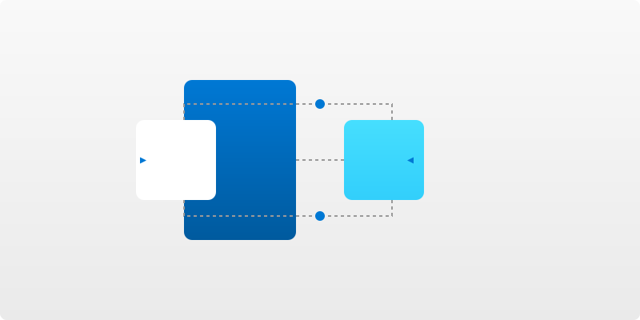

Microsoft Power Automate
簡化工作流程，自動化重複性任務
什麼是 Power Automate？

- Microsoft Power Platform 的一部分，提供工作流程自動化服務
- 在喜愛的應用程式和服務之間創建自動化工作流程
- 不需要編程知識，使用低程式碼/無程式碼方法實現自動化
- 提高生產力，節省時間，減少人為錯誤
Power Automate 關鍵功能
雲端流程 (Cloud Flows)
根據觸發條件自動執行任務，包括自動流程、即時流程和排程流程
桌面流程 (Desktop Flows)
使用 RPA（機器人流程自動化）自動執行桌面應用程式和網頁上的工作
業務流程 (Business Process Flows)
引導使用者完成組織定義的業務流程，確保一致性和效率
AI 驅動功能
AI 撰寫
使用 Copilot 透過自然語言更快地建立、編輯和擴展流程自動化
AI 見解
透過 AI 推薦更快地發現優化和自動化機會
AI 處理
應用內建 AI 模型，智能自動化文檔等重複性工作
AI 生成
利用內建 GPT 支援，負責任地將原始數據轉換為引人入勝的內容
AI Copilot
當收到新郵件且主旨包含「緊急」時發送短信通知
正在為您創建流程...
豐富的連接器生態系統
Power Automate 提供 1,000+ 種預構建連接器，連接各種應用和服務
Microsoft 365
SharePoint
Teams
Dynamics 365
OneDrive
Excel
SQL Server
Azure
GitHub
Salesforce
SAP
更多...
常見應用場景
人力資源自動化
- 自動化入職與離職流程
- 休假申請自動審批
- 自動發送員工滿意度調查
- 自動提醒績效考核時間
銷售與行銷自動化
- 自動跟進潛在客戶
- 自動生成銷售報告
- 社交媒體監控與回應
- 客戶資料自動更新
生產與運營自動化
- 庫存監控與自動補貨
- 生產線異常自動警報
- 工單和維修請求自動分配
- 品質控制報告自動生成
財務與會計自動化
- 自動化發票處理
- 費用報銷自動審批
- 定期財務報表自動生成
- 應收賬款提醒
操作簡介
1
登入 Power Automate
使用 Microsoft 帳號登入 flow.microsoft.com
2
選擇流程類型
根據需求選擇自動流程、即時流程、排程流程或桌面流程
3
配置觸發條件
設定何時觸發流程（例如：收到郵件、檔案更新等）
4
添加操作
從連接器中選擇並配置要執行的操作
5
保存並測試
儲存流程並進行測試，確保正常運作
Power Automate 演示


總結
Power Automate 優勢
- 低程式碼/無程式碼平台，降低技術門檻
- 豐富的連接器生態系統，支持各種應用集成
- AI 驅動功能提升自動化效率
- 與 Microsoft 生態系統緊密整合
- 桌面和雲端流程結合，實現全面自動化
適用對象
- 業務使用者：無需編程知識也能自動化日常任務
- 部門管理者：提高團隊效率，減少人工錯誤
- IT 專業人員：快速開發和部署自動化解決方案
- 企業決策者：實現數字化轉型，提高生產力
開始使用 Power Automate，簡化工作流程，提升效率！
訪問 Power Automate1 / 8